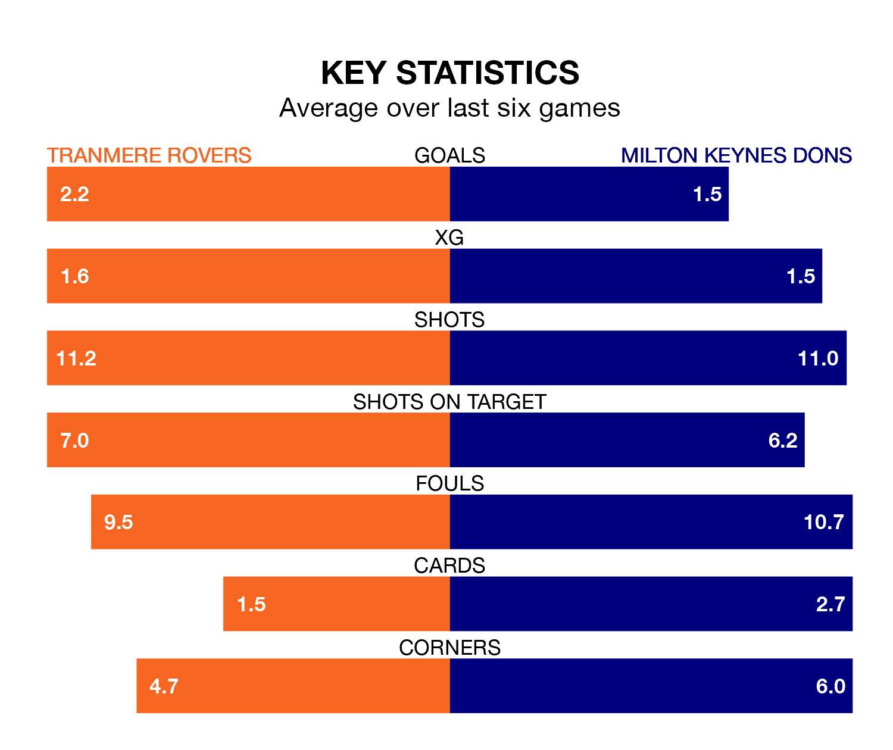

Milton Keynes Dons travel to Tranmere Rovers on Saturday in EFL League Two.
The visitors come into the game on the back of a defeat in their last match, having lost to Doncaster Rovers 3-0 away.
Tranmere also lost their last match, 1-0 against Barrow.
With 39 goals in 24 games so far this season, Milton Keynes are scoring more than average in the league with 1.6 goals per game. And they are conceding fewer than average, letting in 31 goals at a rate of 1.3 per game.
Tranmere are also above average scorers, with 1.6 goals per game, compared to a league average of 1.5. They have conceded 1.5 goals per game.
Rovers are in reasonable form in EFL League Two, with four wins and two losses from their last six games.
With four wins and a draw over that period, Dons' form is slightly better – they have taken 13 points from 18, compared to the hosts' 12.
The Dons are eighth in the table after 24 games, of which they have won 11 and drawn six, earning 39 points.
Tranmere are eight places behind the away side in 16th, with 10 wins and three draws putting them on 33 points.
Saturday's match will be refereed by Darren Drysdale, who has taken charge of eight EFL League Two games so far this season, issuing one red card and booking 33 players. He has awarded five penalties.
The last Milton Keynes game Drysdale refereed was the 2-1 loss away at Gillingham on October 7. He is yet to oversee a match featuring Tranmere this season.
Updated: 13:38 (UTC), 10/01/24